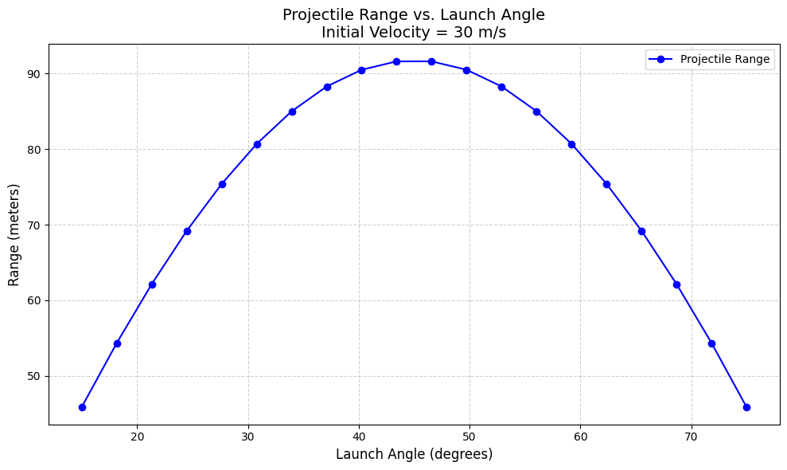

Problem 1
Investigating the Range as a Function of the Angle of Projection
1. Theoretical Foundation
Governing Equations of Motion
Projectile motion is governed by Newtonian mechanics. Assuming no air resistance, the motion can be described using kinematic equations under uniform gravitational acceleration.
Equations of Motion
The position of the projectile as a function of time can be written as:
\(x(t) = v_0\cos(\theta)t\) \(y(t) = v_0\sin(\theta)t - \frac{1}{2}gt^2\)
where: - \(x(t)\) and \(y(t)\) are the horizontal and vertical positions at time \(t\), - \(v_0\) is the initial velocity, - \(\theta\) is the angle of projection, - \(g\) is the acceleration due to gravity.
Solving the Differential Equations
From Newton’s Second Law, the acceleration components are:
Integrating these equations:
Another integration gives:
Time of Flight, Maximum Height, and Range
Time of Flight
The time when the projectile returns to the ground \(y = 0\):
Solving for \(t\):
Maximum Height
At maximum height, \(\frac{dy}{dt} = 0\):
Solving for \(t_h\):
The maximum height is then:
Range of the Projectile
The range is the horizontal distance when \(y = 0\) after time \(t_f\):
Effect of Initial Conditions
Variations in \(v_0\), \(\theta\), and \(g\) affect the projectile's motion: 1. Initial Velocity (\(v_0\)): Higher \(v_0\) increases range and height. 2. Angle of Projection (\(\theta\)): The range is maximized at \(45^\circ\). 3. Gravitational Acceleration (\(g\)): A larger \(g\) reduces range and height, relevant for different planetary bodies.
2. Analysis of the Range
Dependence on the Angle of Projection
The range \(R\) of a projectile is given by:
This equation shows that \(R\) depends on the angle of projection \(\theta\). The function \(\sin(2\theta)\) reaches its maximum at \(\theta = 45^\circ\), meaning the maximum range occurs at this angle.
- For small angles (\(\theta < 45^\circ\)), the projectile does not reach significant height, reducing its flight time and range.
- For large angles (\(\theta > 45^\circ\)), more velocity is directed vertically, increasing height but reducing horizontal distance.
Effect of Initial Velocity
Since \(R\) is proportional to \(v_0^2\):
- Increasing \(v_0\) increases the range quadratically.
- A small increase in \(v_0\) significantly extends the distance traveled by the projectile.
Effect of Gravitational Acceleration
Since \(R\) is inversely proportional to \(g\):
- A lower gravitational acceleration (e.g., on the Moon) results in a larger range.
- A higher \(g\) (e.g., on Jupiter) reduces the range due to increased downward pull.
Summary of Key Findings
- Optimal angle for maximum range: \(45^\circ\)
- Range increases quadratically with initial velocity.
- Range decreases with increasing gravitational acceleration.
These findings are essential in real-world applications such as ballistics, sports science, and aerospace engineering.
3. Practical Applications
Projectile Motion in Real-World Scenarios
1. Sports Science
- Basketball and Soccer: Players adjust their shooting or kicking angles to optimize range and accuracy.
- Javelin and Discus Throw: Athletes use biomechanics to maximize distance by choosing optimal launch angles and speeds.
2. Military and Ballistics
- Artillery Trajectories: Engineers use projectile equations to optimize the firing angles of missiles and shells.
- Guided Projectiles: Advanced calculations incorporate factors such as wind resistance and Coriolis effects.
3. Aerospace Engineering
- Rocket Launches: Rockets follow projectile motion principles during initial launch phases before entering controlled flight.
- Lunar and Martian Environments: Lower gravity alters projectile trajectories, requiring adjustments in calculations.
4. Environmental and Engineering Applications
- Landslide and Avalanche Predictions: Scientists model falling debris as projectiles to estimate impact zones.
- Construction and Demolition: Engineers predict debris trajectories in controlled explosions.
5. Effects of Air Resistance and Uneven Terrain
- Air Resistance: Real-world projectiles experience drag, reducing range compared to ideal equations.
- Uneven Terrain: Adjustments in launch height and ground impact calculations affect final displacement.
Conclusion
Understanding projectile motion has widespread applications across multiple fields, from sports and defense to space exploration and engineering. Incorporating additional real-world factors, such as drag and varying gravitational fields, further refines these models, making them essential tools in practical scenarios.
Python/Plot

```python import numpy as np import matplotlib.pyplot as plt
def projectile_range(angle, v0, g=9.81): """Compute the range of a projectile given an angle and initial velocity.""" angle_rad = np.radians(angle) return (v0**2 * np.sin(2 * angle_rad)) / g
def simulate_projectile(v0=20, angles=np.linspace(10, 80, 10), g=9.81): """Simulates projectile motion and plots range vs. launch angle.""" ranges = [projectile_range(angle, v0, g) for angle in angles]
plt.figure(figsize=(8, 5))
plt.plot(angles, ranges, marker='o', linestyle='-')
plt.xlabel("Launch Angle (degrees)")
plt.ylabel("Range (meters)")
plt.title(f"Projectile Range vs. Angle (Initial Velocity = {v0} m/s)")
plt.grid()
plt.show()
simulate_projectile(v0=30) ```
link: colab